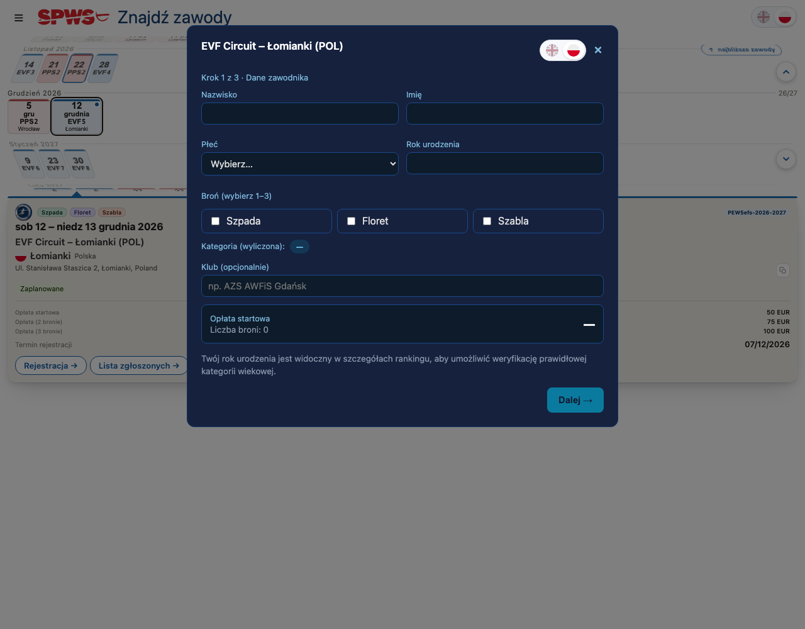
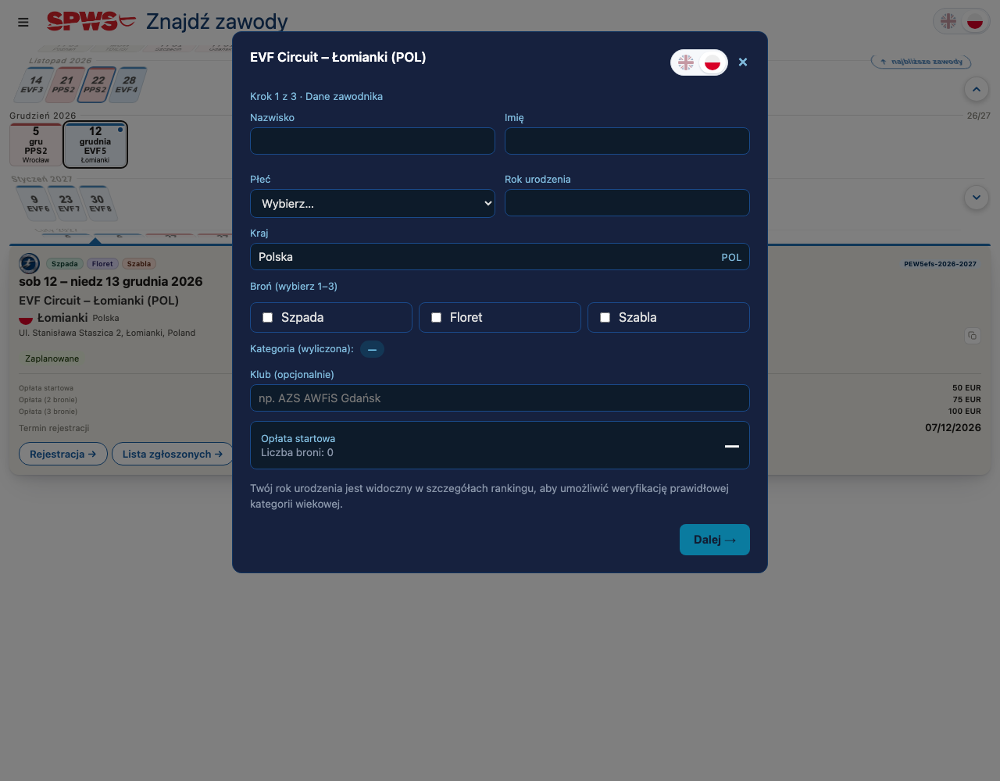
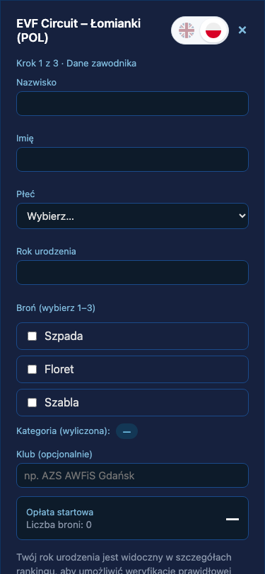
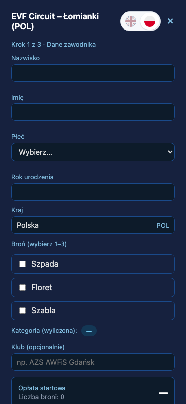
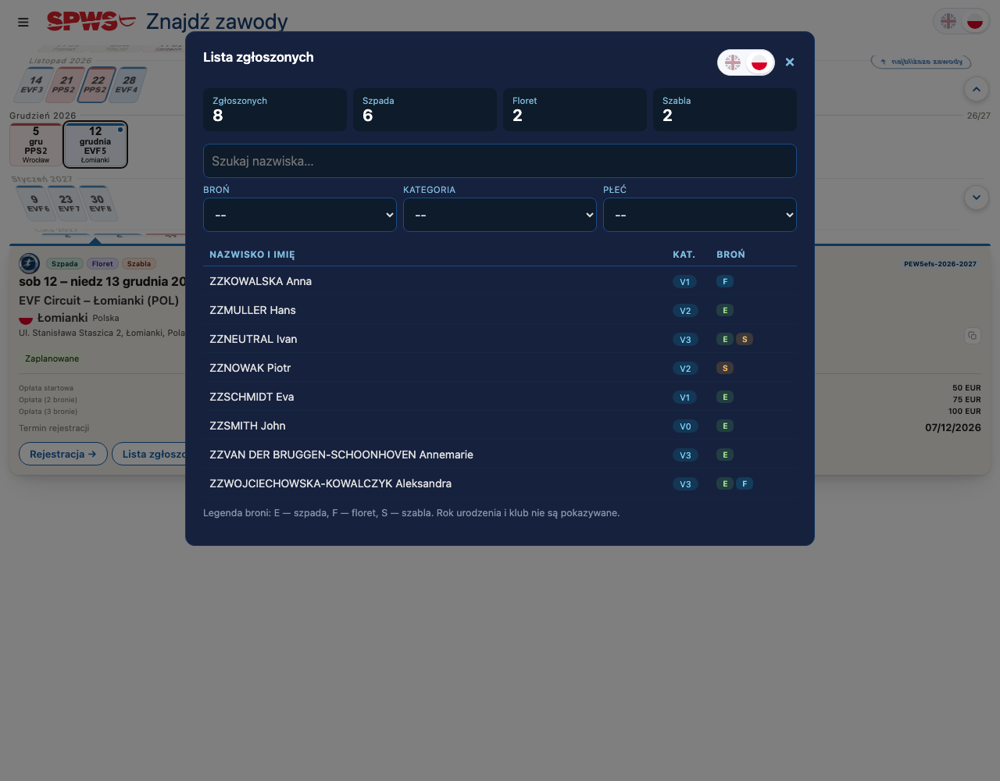
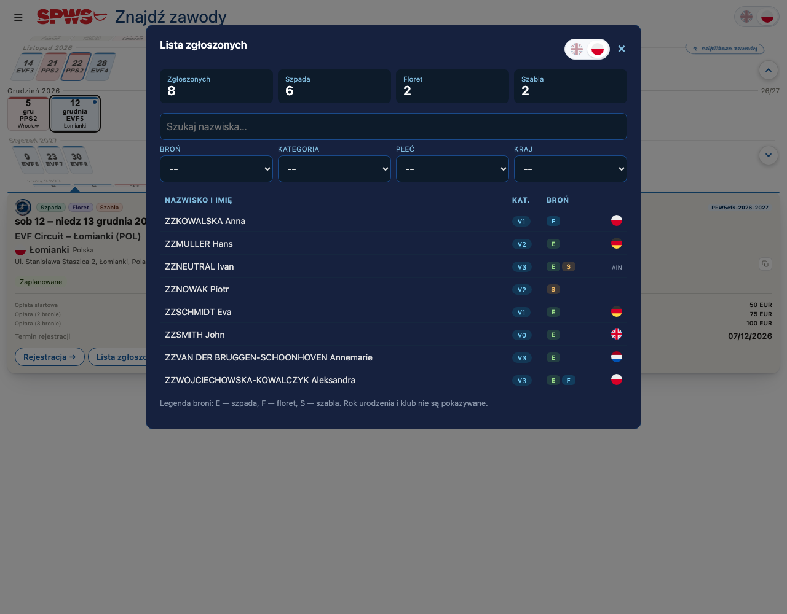
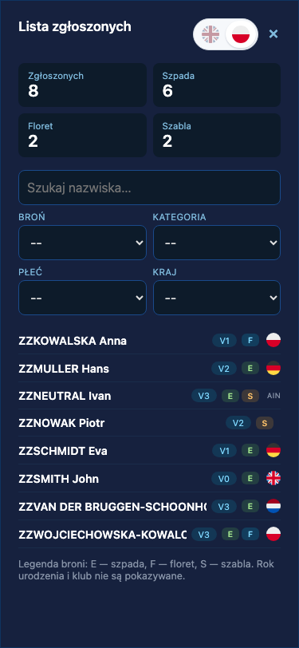
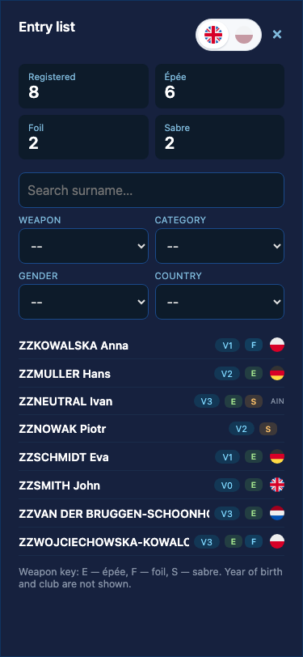
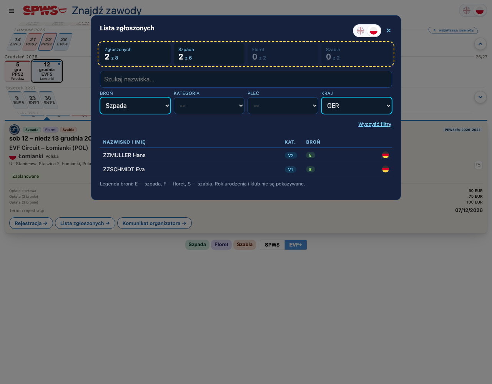
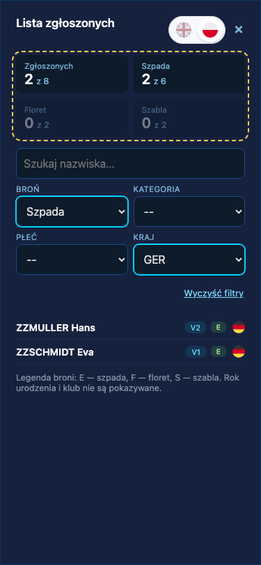

Registration form · Country · Release 3 of 4 · Pixel sheet
A country chosen from a list, shown as a flag, filtered by its code
Captured on the WordPress calendar page body (doc/wordpress/znajdz-zawody.html) with the bundle built from main and from this branch, LOCAL standing in for PROD. An entry list without countries is pixel-identical; the form gains one row and one consent line. The new states are below for your approval, with the ADR-079 and ADR-080 amendment drafts. Nothing is pushed.
01 · Nothing else changed
Before against after
- Noise floor first. Two runs of main's build: 16 of 16 form captures identical.
- The entry list as PROD holds it today (no entry has a country yet), desktop 1280 and phone 375, PL and EN: 4 of 4 identical. No flag column, no „Kraj” filter: the list looks exactly as before until someone picks a country.
- The form: 4 of 16 identical. The four identical captures are the name check. The others differ only from the new „Kraj” row down (the empty and typed form) and from the consent table down (the consent screen, its new line); above those the pixels are equal.
- No page errors in any run (0 across every report in
registration-country-release-3-sheet/*/).
The empty form, main against the branch: the „Kraj” row, Polska chosen, sits below the birth year




The list with no countries: identical

02 · The new states
For your approval
1 · the form opens with Polska (POL) chosen; „wiel” typed finds Wielka Brytania (GBR); also by English name, by code, and by Anglia, England, Great Britain, Holandia, Holland, Czech Republic
2 · picked: the box reads the name, the code stands beside it
3 · consent v1.2: a row for the country (contract, Art. 6(1)(b)) and the line „Kraj jest widoczny na publicznej liście zgłoszonych.”


4 · the list with countries: the flag alone at the end of the line, 18 px; AIN, which has no flag, shows its letters (D1); an entry without a country shows nothing. Main's build shows the same rows without the column.








5 · „Kraj” offers only the codes present (AIN, GBR, GER, NED, POL); with „Szpada” it narrows to ZZMULLER Hans, ZZSCHMIDT Eva




03 · LOCAL walk-through
A British entrant registers and finds her flag
- Typed „wiel” in the country box and picked from the list: the box reads Wielka Brytania, code GBR.
- Name check, consent, submitted: „✓ Zgłoszenie potwierdzone”. LOCAL stored ZZBROWN Emily, 1975,
txt_countryGBR, consent v1.2; the anonymous view returns GBR. - On „Lista zgłoszonych” her row carries the flag labelled „Wielka Brytania”; „Kraj” offers AIN, GBR, GER, NED, POL. Every entry was removed afterwards; LOCAL holds 0 entries.
- The organizer's file takes
Nationfrom the entry: GER for MÜLLER, POL for an entry with no country, with the same literal asserted by the TypeScript and Python exporters (RFCTRY.24–26) and the database function returning the column (RFCTRY.22).


04 · What the release changes in the data
One new column, empty; one new code table
- Nothing stored changes.
tbl_registration.txt_countryis added empty; every existing entry stays without a country and shows as today. - Every start file for an existing entry is byte-identical: no country writes POL, as every file did before (RFCTRY.25).
- The code table
tbl_fencing_countryholds 207 three-letter fencing codes, each with its flag's two-letter code or none (AIN, TPE); the column refers to it, so no other value can be stored. The table is read by no visitor: the form carries the same list, and a test compares the two (RFCTRY.01). - The PROD → CERT copy carries the country (RFCTRY.21).
05 · For your sign-off
ADR-079 and ADR-080 amendment drafts
ADR-079 · Amendment (2026-11-21, release 3) — the entrant declares a country; the list shows its flag
Context. Foreign veterans register for SPWS events, and the organizer's start files wrote every entrant as POL. The form had no country, so a German entrant reached the fencing software as Polish and had to be corrected by hand.
Decision. (1) The form asks for a country from a pick-list of the 207 fencing codes, Polska chosen at the start; it searches the Polish and English names, the code and a few common other names (Anglia, England, Great Britain, Holandia, Holland, Czech Republic); nothing else can be typed in. (2) The entry stores the three-letter code in tbl_registration.txt_country, which refers to tbl_fencing_country; an entry may have none. Every write path carries it: create, edit, the event's replacement and the PROD → CERT copy. (3) The entry list shows the flag alone at the end of the line, 18 px, labelled with the country's name; a code without a flag shows its letters in small type (D1); no country, nothing. The flag column and the „Kraj” filter appear only when an entry has a country. (4) „Kraj” lists the codes present, and works together with the other filters. (5) The consent text becomes v1.2: the country is processed under the contract (Art. 6(1)(b)) and is shown on the public list.
Consequences. A list without countries is unchanged to the pixel. Migrations 20261121000004 (the table and the column) and 20261121000005 (the write paths and the view). Tests: Vitest RFCTRY.01–17, 24–27 (fencingCountries.test.ts, CountryPicker.test.ts, RegistrationForm.test.ts, EntryList.test.ts, api.registration.test.ts); pgTAP RFCTRY.18–23 (132_registration_country.sql); pytest RFCTRY.21. FR-169.
ADR-080 · Amendment (2026-11-21, release 3) — Nation comes from the entry
Decision. A Tireur's Nation is the entry's declared code; an entry without one writes POL, so the files of Polish entrants do not change by one byte. Federation stays POL: the organizer is SPWS. The TypeScript and Python exporters stay twins and assert the same mixed-list literal.
Consequences. fn_ftl_export_entries returns txt_country; the shared-link download and the Python export both write it. Tests RFCTRY.22, 24–26.
06 · Found on the way
Issues, each fixed here
- „brit” found nothing. Intl gives „Wielka Brytania” and "United Kingdom", so a search for Britain or England missed it. A short list of other names now covers GBR, NED and CZE (RFCTRY.05).
- A pick did not show its name after the box was left: the chosen code was not bound back to the form. It is now (RFCTRY.04).
- The migration's safety lints (postgrestools, a hard gate): the column is added last in its own file and the reference is added
NOT VALID, so the table is not scanned under lock; the write paths are in a second file. Zero findings. - LOCAL only: while the migration was being shaped, a column drop with CASCADE removed the entry-list view and its grants on LOCAL. Both migrations were re-applied and the grants restored to match CERT; nothing outside LOCAL was touched, and the released migrations contain no drop of the column.
- The capture tool's own query named
txt_countrybare, which is ambiguous against the event's own country column; it now names the table.
pixel sheet · FR-169 release 3 · 21 Nov 2026 · tools: registration-country-release-3-sheet/tools/proof.cjs (form · list · filter · walk), seed-list.sql, diff.py, build_sheet.py